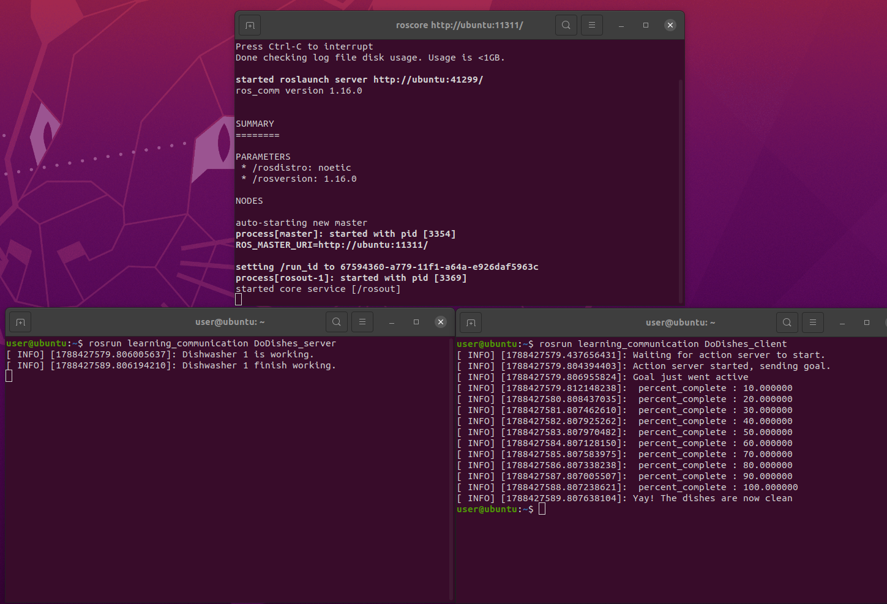

ROS理论与实践第二章代码运行
第一步：装 VMware + 打开虚拟机
- 双击
VMware_16_...exe安装，激活码填ZF3R0-FHED2-M80TY-8QYGC-NPKYF。 - 装好后 VMware → 文件 → 打开虚拟机，选这个文件：
ros\ros_noetic_humble_gazebov11_linux_win_v1\ros_noetic_humble_gazebov11_linux_win_v1\ros-noetic-humble-gazebo11-linux-win-v1.vmx - 先别急着开机，看下配置：这个虚拟机默认分配了 6 核 CPU / 8.78 GB 内存 / 768MB 显存。如果你电脑没那么强，在「虚拟机设置」里把 CPU 和内存调低（比如 4 核 / 4GB），否则会卡或抢资源。
第二步：把代码共享至虚拟机
- 虚拟机-->设置 → 选项 → 共享文件夹 → 总是启用，添加主机的
ros文件夹。 - 在虚拟机 Ubuntu 里，它出现在
/mnt/hgfs/下，如果没有出现，输入sudo vmware-hgfsclient（密码为：password）列出有哪些共享随后执行echo ".host:/ros /mnt/hgfs fuse.vmhgfs-fuse defaults,allow_other 0 0" | sudo tee -a /etc/fstab然后再看ls /mnt/hgfs/就可以看到挂载文件中的内容了。
第三步：把第二章代码拷进 workspace
ls "/mnt/hgfs/src/chap2"确认能看到 learning_communication 和 learning_tf 两个文件夹，然后拷：
mkdir -p ~/ros_ws/src
cp -r "/mnt/hgfs/src/chap2/learning_communication" ~/ros_ws/src/
cp -r "/mnt/hgfs/src/chap2/learning_tf" ~/ros_ws/src/一定要 cp 到 ~/ros_ws/src 再编，不要直接在 /mnt/hgfs 里编（共享目录编译会出符号链接问题）。
第四步：编译
echo "source /opt/ros/noetic/setup.bash" >> ~/.bashrc
source ~/.bashrc
cd ~/ros_ws # 在 ros_ws 根目录，不是 src 里
catkin_make
echo "source ~/ros_ws/devel/setup.bash" >> ~/.bashrc
source ~/.bashrc第五步：运行
①话题（发布/订阅）
# 终端1
roscore
# 终端2
rosrun learning_communication talker # 看到 hello world 0,1,2...
# 终端3
rosrun learning_communication listener # 看到 I heard: [hello world N]结果如下图所示：

② 服务（请求/应答）
# 终端1
roscore
# 终端2
rosrun learning_communication server # Ready to add two ints.
# 终端3
rosrun learning_communication client 5 6 # Sum: 11结果如下图所示：

③ 动作（Action）
# 终端1
roscore
# 终端2
rosrun learning_communication DoDishes_server
# 终端3
rosrun learning_communication DoDishes_client # 进度 10~100，最后 Yay!结果如下图所示：

④ 验证自定义消息/服务
rosmsg show learning_communication/Person
rossrv show learning_communication/AddTwoInts结果如下图所示：

⑤ 海龟跑动
# 终端1
roscore
# 终端2
rosrun turtlesim turtlesim_node
# 终端3
rosrun turtlesim turtle_teleop_key
# 鼠标点进键盘控制的那个终端，按方向键移动 turtle1，turtle2 会追着跑结果如下图所示：
 6.海龟跟随
6.海龟跟随
# 终端1
roscore
# 终端2
roslaunch learning_tf start_demo_with_listener.launch
# 鼠标点进键盘控制的那个终端，按方向键移动 turtle1，turtle2 会追着跑结果如下图所示：